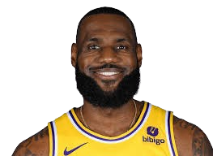

LeBron James
Michael Jordan

LeBron James' journey to the NBA is a story of incredible talent, hard work, and overcoming adversity. Born on December 30, 1984, in Akron, Ohio, LeBron faced a challenging childhood. Raised by his single mother, Gloria James, in a neighborhood plagued by crime and poverty, LeBron's early life wasn't easy. They frequently moved from apartment to apartment, but his love for basketball was evident from a young age. LeBron attended St. Vincent-St. Mary High School in Akron, where his basketball skills quickly made him a national sensation. By his sophomore year, he was already dominating high school courts, and his games were drawing large crowds. He led his high school team to three state championships in four years and was named to the USA Today All-USA First Team as a sophomore, an honor usually reserved for college players. In 2002, LeBron’s talent earned him the cover of Sports Illustrated, with the headline "The Chosen One," making him a household name before even entering college. This immense pressure only fueled his drive, and by his senior year, he was considered the best high school basketball player in the country. In 2003, LeBron declared for the NBA Draft and was selected as the #1 overall pick by the Cleveland Cavaliers. His transition to the NBA was seamless. As a rookie, LeBron won NBA Rookie of the Year, averaging 20.9 points, 5.5 rebounds, and 5.5 assists per game, quickly establishing himself as one of the league's brightest stars.
Michael Jordan’s path to NBA greatness is one of the most iconic in sports history, characterized by talent, perseverance, and an unyielding desire to win. Born on February 17, 1963, in Brooklyn, New York, Michael grew up in Wilmington, North Carolina, where he developed a fierce competitive spirit. Raised by his parents, James and Deloris, Jordan was encouraged to pursue sports, and from a young age, he displayed exceptional athletic abilities. Jordan attended Laney High School in Wilmington, where he was initially cut from the varsity basketball team as a sophomore. This setback only motivated him more, and he returned the next season, leading his team to the state championships. His standout performances in high school earned him a scholarship to play for the University of North Carolina. At UNC, under the coaching of Dean Smith, Jordan quickly made a name for himself. As a freshman, he hit the game-winning shot in the 1982 NCAA Championship game against Georgetown, showcasing his clutch ability. Over the next two years, he refined his skills, particularly his scoring and defense, before declaring for the 1984 NBA Draft. Jordan was selected by the Chicago Bulls with the 3rd overall pick. In his first season, he made an immediate impact, winning NBA Rookie of the Year honors and averaging an impressive 28.2 points per game. Over the next few years, Jordan’s scoring ability, athleticism, and competitive fire earned him a reputation as the most electrifying player in the league.
Derrick Rose's journey to the NBA is a story of extraordinary talent, resilience, and perseverance. Born on October 4, 1988, in Chicago, Illinois, Derrick Rose grew up in a neighborhood marked by poverty and violence, where basketball became an outlet for his passion and drive. Raised by his mother, Brenda, along with his four brothers, Derrick quickly became known for his skills on the basketball court. Rose attended Simeon Career Academy in Chicago, where he emerged as one of the top high school basketball players in the country. He led his team to two state championships and was named USA Today’s High School Player of the Year in 2007. His explosive athleticism, quickness, and ability to finish around the basket made him a standout player, and his success earned him a scholarship to play for the University of Memphis. At Memphis, Rose played for legendary coach John Calipari and helped lead the Tigers to the 2008 NCAA Championship game. Although Memphis ultimately lost to Kansas in the final, Rose's performance throughout the tournament solidified his status as the top prospect in the 2008 NBA Draft. After one season at Memphis, he declared for the draft, and in June 2008, he was selected #1 overall by the Chicago Bulls. In his rookie season, Derrick Rose made an immediate impact, averaging 16.8 points and 6.3 assists per game, and winning the NBA Rookie of the Year award. His explosive speed, ball-handling skills, and ability to create plays for himself and his teammates were immediately evident, and Rose became the face of the Bulls' future.